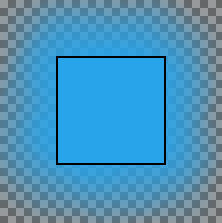

MyPaint is a free painting program that comes with a lot of brushes. Its brush engine is quite different from the one used by the Paintbrush tool. GIMP embeds the MyPaint brush engine in the MyPaint Brush tool.
GIMP ships with the same default brushes as MyPaint itself.
You can find more collections of third-party MyPaint brushes throughout the Web,
often in a compressed format, such as in a .zip file.
Unzip this file into a temp folder.
First go to → → . There, you will find the path to your personal Mypaint folder.
-
Under Linux:
/home/YourUserName/.mypaint/brushes. Take good note it is a hidden directory.Open your file browser. Check the option “Show hidden files”. Go to your personal MyPaint folder. If it does not exist yet, you have to create it, with the brushes directory inside.
Copy-paste all the unzipped files from your temp folder to
home/YourUserName/.mypaint/brushes. -
Under Windows 10:
C:\Users\your-user-name\.mypaint\brushes. Click on this item to select it and click on the icon that opens a file browser. In the root of your home folder, create a new folder "mypaint". The MyPaint path in Preferences becomesC:\Users\your-user-name\mypaint.Copy-paste all the unzipped files from your temp folder to
C:\Users\your-user-name\mypaint.
Activate the tool as below: you should have got a MyPaint brush icon in the tool options dialog. Click on this icon to display all MyPaint brushes.
There are different possibilities to activate the tool:
-
From the main menu: → → .
-
By clicking the tool icon in the Toolbox.
-
By pressing the Y keyboard shortcut.
Normally, tool options are displayed in a window attached under the Toolbox as soon as you activate a tool. If they are not, you can access them from the main menu through → → which opens the option window of the selected tool. The available tool options can also be accessed by double clicking the corresponding tool icon in the Toolbox.
Options may act somewhat differently according to the MyPaint brush you use.
- Opacity
-
To set the opacity of the brush (0.0 - 100.0). Opacity depends on a base: please see below.
- Brush
-
The icon of the active brush is displayed. If you click on it, the MyPaint brushes list is displayed and you can select another brush
In the bottom bar of the dialog, you have buttons for smaller or larger icons, and view as list or as grid. The right most button opens the MyPaint Brushes Dialog.
- Radius
-
To set the radius of the brush.
- Base Opacity
-
These values (0.00 - 2.00) are multiplying factors: if, for example, you set this option to 0.50, the maximal opacity becomes 100 * 0.50 = 50, although it is still 100.0 in the Opacity option.
Table 14.3. Base opacity example
Base Opacity
Opacity 100 50 25 1.00 
=100
=50

=25
0.50 =50
=25
=12.5
2.00 =100
=100
=50
Base opacity can exceed 1.00 up to 2.00. Of course, opacity can not exceed 100. In the example, you can see that an opacity option above 50 (100 * 2.00 = 200) is actually an opacity at 100, and 25 * 200 = 50 is equivalent to 50 * 1.00 = 50. But this possibility is useful when your Mypaint brush has a default opacity less than 100.
- Hardness
-
The harder the brush the sharper the brush. When you reduce hardness, the Mypaint brush may not act if the brush size is too small.
- Gain
-
This setting changes the pressure gain of pressing down on the canvas with a brush.
If you are using a tablet, then you can adjust this setting to make your brush strokes softer or harder. If you are using a mouse, then you can simulate the effects of pressure when painting.
- Smooth stroke
-
If this option is checked, strokes are smoother. Two options are available:
-
Quality: Depth of smoothing.
-
Weight: Gravity of the pen.
-
- Erase with this brush
-
If this option is checked, the brush acts as an eraser. As with the Eraser tool, erased areas are transparent if there is an alpha layer, or the background color if there is no alpha layer.
- No erasing effect
-
If this option is checked, the brush will not decrease the alpha of pixels. For example, if you blur an edge between opaque and transparent pixels, the alpha of the transparent pixels will increase but the alpha of the opaque pixels will not decrease.
Figure 14.70. An example of "No erasing"

Without "No erasing effect"

With "No erasing effect"
- Expand Layers
- See the Common Paint Tool Options for a description of tool options that apply to many or all paint tools.